Does Human Activity Affect Earth's Climate?

To a Climate Scientist the temperature changes shown in the image on the left could be disturbing. However, the Earth has a history of climate change and it could be that these temperature changes are just part of that historical pattern. In order to logically answer the question: "Does human activity affect climate?", we need to study the Earth's climate before there were any humans.
In this article we will first examine results of data that has been collected that reveals the Earth's climate history over the last 400,000 years. We will then try to find an explanation of why the history contains temperature variations large enough to cause glacial cycles. That explanation will lead to a mathematical model of the Earth's climate history before there was any human activity. Finally, we will look at present day climate readings and compare them with the Earth's history and the climate models.
Data Reveals Earth's Climate History
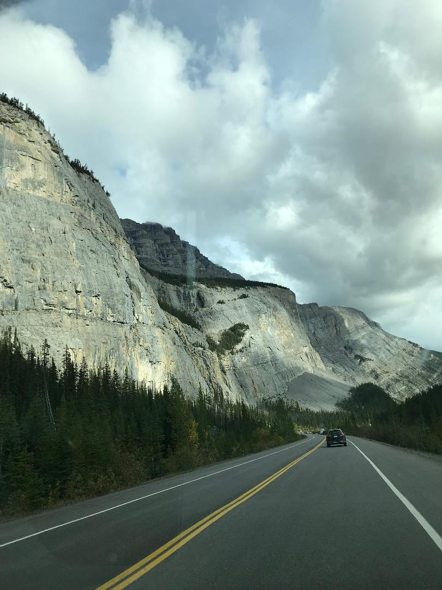
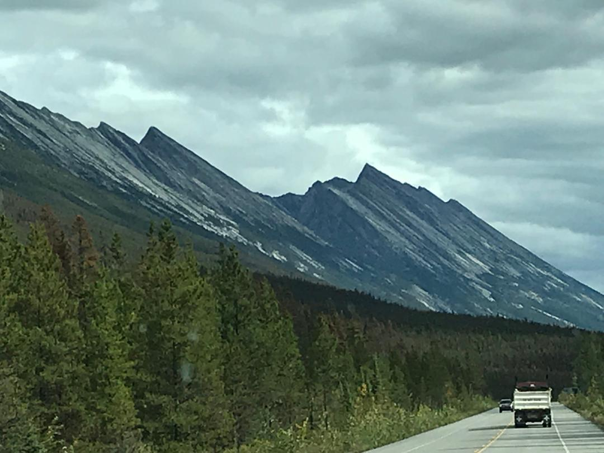
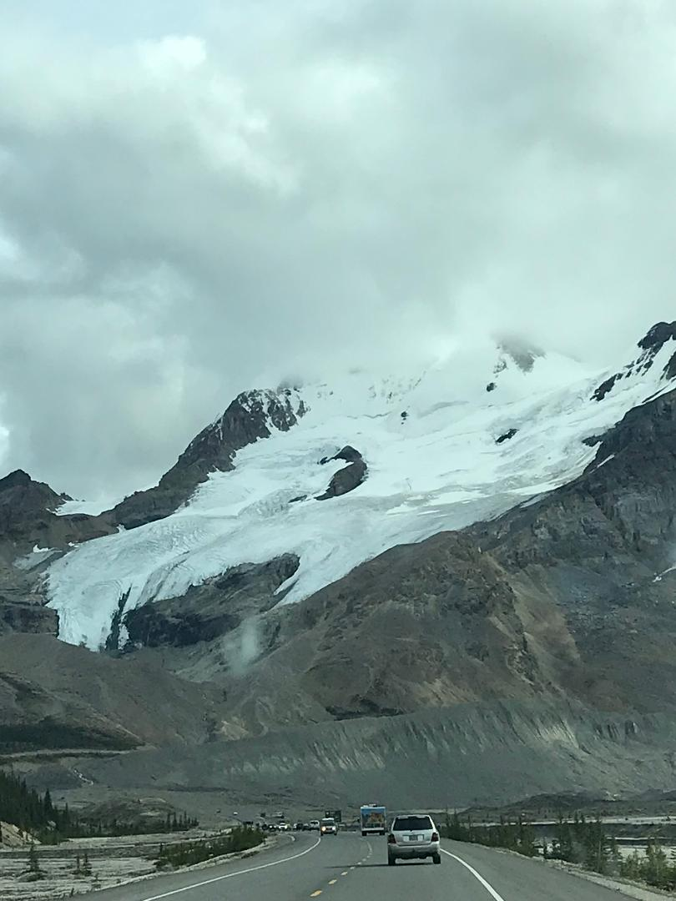
We have plenty of anecdotal evidence that there was a glacial cycle in our history. If you take a trip through the Canadian Rockies you can see the work of glacier movement as the glaciers gouged out half of mountains to form large valleys. In fact, some of those glaciers still remain as you can see in the image above right. These images show some of the effects left behind by the last glacial cycle, but were there other glacial cycles that came before? We obviously are living in a warmer climate since the last glacial cycle. Were there any other warmer periods? If so, when did they occur? If we want to make a model of the Earth's climate history, we must be able to measure and date climate parameters as they changed over time. So how do we measure those time periods that extend back hundreds of thousands or even millions of years?
Fortunately there are other groups of scientists that do just those kinds of measurements — namely they examine the Earth's geological record. The term "geological record" refers to a huge body of data that has been collected over the past 300 years. The geological record contains:
- Fossils that preserve biological materials such as corals, diatoms, and forams
- Chemical records that include isotope ratios, biomarkers, and biogenic silica
- Physical records that include ice cores, sediment cores, and tree rings
Direct measurements of Earth's climate history only exist for the last couple of centuries. So in order to determine historical temperature changes thousands and hundreds of thousands of years ago, scientists use readings from the geological record to serve as indicators or proxies that are sensitive to climate parameters. With the use of these various research methods, scientists can use this wealth of data to create a time series picture of the Earth's climate history. Also you can read a detailed description of how readings from ice cores are used as proxies to determine past temperature changes.
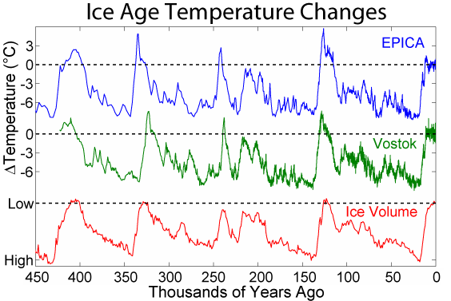
The image at the left shows on the same graph results of three different sample sets. The graph in blue represents the data collected by the European Project for Ice Coring in Antarctica (EPICA). The graph in green represents the ice core data collected by the Vostok Russian team also in Antarctica. The temperature scale on the vertical axis uses the value "0" as present day global temperature. The graph in red represents a combination of sediment data (benthic foraminifera) collected from sea beds around the world. What is important in these graphs is how their trends over time match each other. That is, their ups, downs, peaks and valleys all occur approximately within the same time span. You can see by looking at the valleys in the curves that there were 4 glacial cycles over the last 400K years. They occurred approximately at 350K, 250K, 150K and 50K years ago.
These ice core measurements are just a few of the vast number of data sets from sources listed above. All the data seem to match these ice core measurements. With such agreement from diverse data sources we can be confident that we have a solid historical record of the Earth's climate changes over at least the last 450K years. While the ice core data only gives us about a 450K year history (the drills reached bedrock) we can still use ocean sediment cores (foraminifera isotope data) to reach back millions of years. However for the purposes of this article we only need recent historical data (450K years) in order to compare that history with present conditions.
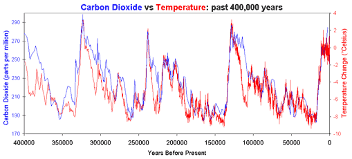
The geological record also gives us additional data that shows that global temperature and carbon dioxide levels in the Earth's atmosphere have shared the same trends over the last 450K years. The graph on the left shows these similar trends in the historical data. Notice that over the last 450K years the carbon dioxide concentrations have varied from about 175 parts per million (ppm) to about 290 ppm.
Why Does Earth's Climate Change?
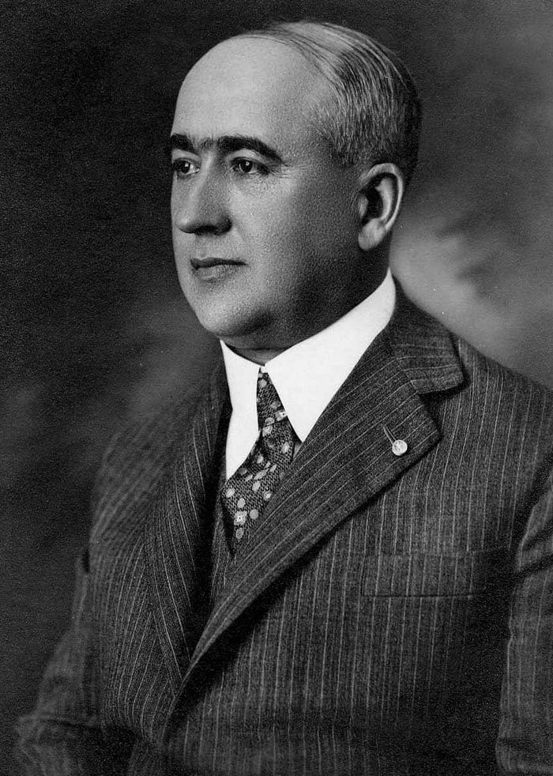
Milutin Milankovic was a civil engineer in what was then Yugoslavia. Although he made his living by designing buildings and bridges, in his spare time (there was no Netflix) he worked on the problem of quantifying how much of the sun's radiation reached the Earth's surface. In 1914 he was caught in the middle of the conflict between the Austro-Hungarian empire and Serbia and was arrested for just being a citizen of Serbia. During his time in prison, he used the time wisely to expand his theories to predicting (correctly by today's measurements) surface temperatures on the inner planets of our solar system, and of our own moon. At the end of the 1930's he started his mathematical model of the Earth's climate changes that attempted to explain the occurrence of not only the last glacial cycle but many previous glacial cycles. In 1941 the Royal Serbian Academy approved and published his work that was entitled "Canon of Insolation of the Earth and Its Application to the Problem of the Ice Ages".
It has been typical throughout history that monumental works like Milankovic's were not recognized in his lifetime. After his death in 1958 his "Canon" was no longer recognized by the scientific community. However, during the 1970's and 1980's a project called "Long range Investigation, Mapping, and Prediction" (CLIMAP) was created and funded by the National Science Foundation (USA), and their findings agreed with the Milankovic's results.
Milankovic's results today are referred to as Milankovitch (English spelling) Cycles. The model he developed started with a simple assumption. He reasoned that since the sun's energy output is practically unchanged, the variations of Earth's climate must be caused by variations in its orbital movements. And that these orbital variations affect how much solar radiation (known as insolation) reaches the Earth. The Milankovitch Cycles predict variations of up to 25% in the amount of incoming insolation at Earth's mid-latitudes. Milankovic recognized that there are three principle ways in which the Earth's orbit varies:
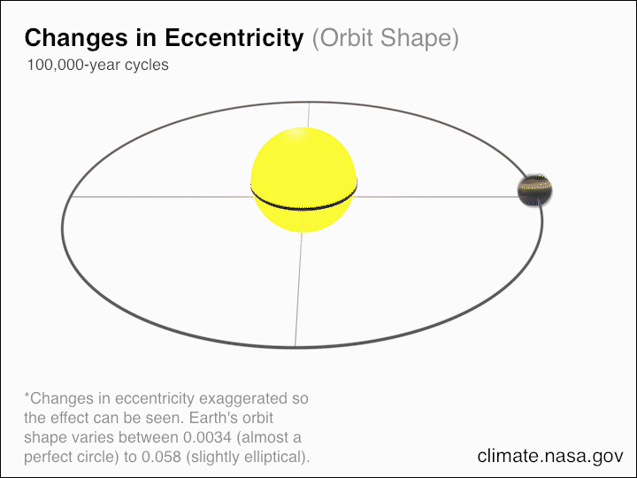
Eccentricity: The Earth's orbit around the sun is elliptical, making the Earth sometimes closer and sometimes further away from the sun. This elliptical orbit shape is not constant since it is affected by the gravity of other planets. Sometimes the orbit is nearly circular, other times the orbit is more elliptical. There are two main periods over which this change occurs: one takes around 100,000 years (from circular to elliptic and back), another takes around 400,000 years.
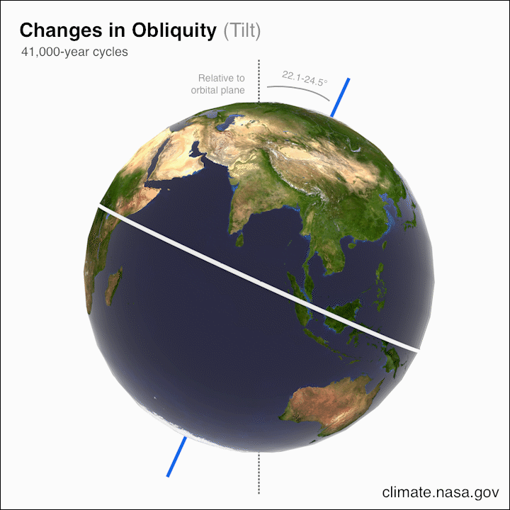
Axial Tilt (Obliquity): The axis around which the Earth spins is not perpendicular to the plane in which it orbits the sun. The Earth spins around an axis at an angle which is currently 23.5 degrees. If this axial tilt were zero, there would be no seasons. This axial tilt also changes over time, varying between 22.1 and 24.5 degrees. The larger the angle, the larger the temperature difference between summer and winter. It takes about 41,000 years for the axial tilt to change from one extreme to the other, and back again. Currently, the axial tilt is midway between the two extremes and is decreasing, which will make the seasons weaker (cooler summers and warmer winters) over the next 20,000 years.

Axial Precession: The direction of Earth's axis of rotation also changes over time relative to the stars. Currently, the North Pole points towards the star Polaris, but the axis of rotation cycles between pointing to that star and the star Vega. This has an impact on Earth's climate as it determines when the seasons occur in Earth's orbit. When the axis is pointing at Vega, the Northern Hemisphere's peak summer is in January, not July. This cycle takes around 20,000 years to complete.
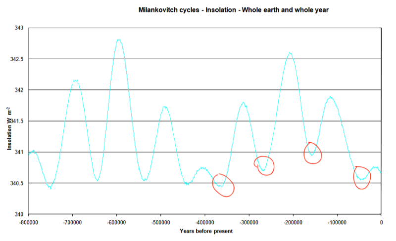
The graph on the left shows the total insolation as calculated by the Milankovitch model over the last 800K years when all of the above factors are added together. Remember that insolation is the amount of the sun's energy that reaches the Earth. Notice that the model shows minimum insolation at approximately 350K, 250K, 150K and 50K years ago which would produce a glacial event. Also notice that at the right end of the graph, Earth has come out of a glacial period, would have warmed slightly, and at present is headed back into a cooling period (but not a glacial event).
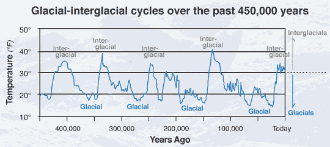
So how does the Milankovitch model compare to the geologic data for the past 400K years? If we combine all the geological historical data into one data set, we get the plot on the left. Notice how all the known major glacial events occurred at approximately the same times that are predicted by the Milankovitch model (approximately 350K, 250K, 150K, and 50K years ago). For our purposes, we are only interested in looking at the recent (400K years) history so that we can compare our current climate changes with both the model and recent geologic data.
One final thought about the Milankovic model. At the time when he formed his theory, there was no data to describe glacial cycles. At that time there was only a suspicion about a recent glacial event that may have happened some 10 thousand years previously. So Milankovic did not have data that would guide him in formulating his model. He started with some basic assumptions about Earth's orbits and did the calculations. This is typical of many great scientific theories. The person that created the theory often does not live long enough to see the validation of his/her work.
Present Climate Data
Now that we have a solid grasp of Earth's recent climate history, we can now turn our attention to the present and compare present data with that of the past. In doing so we will be able to put into perspective how our present climate compares to our past climate. We will be looking at what our present data looks like when placed on the same time series graph as the historical data. Just keep in mind that when we graph our time series data, the time values will be much smaller, that is 400,000 years compared to 100 years. The graphs that have been presented so far took an inch on your screen to display 100,000 years. If we would use the same scale to graph 100 years, the distance between say 100 years and now would take up only 1/1000th of an inch.
We have an advantage in collecting climate data of the present. We can actually directly take temperature and gas concentration measurements. Let's start with CO2 measurements. Later we will see why this particular gas is an important factor.
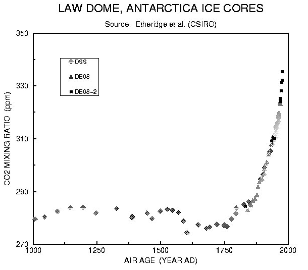
There are many reliable ways to measure CO2 concentrations in the atmosphere both in the present and recent past (back about 1000 years). Again we go to the ice cores where each season as snow accumulates on glaciers, air bubbles get trapped in the accumulation, and by taking a core sample, we can actually sample air from a historical atmosphere. The graph on the left shows data taken from three separate core sources. As you can see, the CO2 concentrations from about 1000 years ago up until around 1800 remained constant at about 280 parts per million (ppm). Then starting at about 1800 each core sample set a new record for the last 1000 years. The core project at Law Dome ended in 1980.
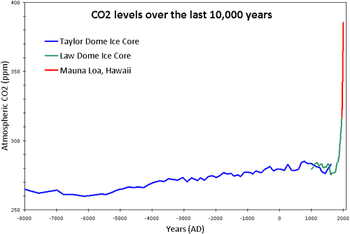
In 1958 continuous observations began at Mauna Loa Volcanic Observatory. We can combine those readings with some ice core readings, and we can put the Mauna Loa readings in the context of the last 10,000 years. If you would like to get an up-to-date reading from Mauna Loa, use this link. The reading for December of 2020 was 414.02 ppm.
Now what would it look like if we were to tack on the present CO2 data on to a graph of geological history data for CO2 over the last 800K years? That exercise would put into perspective the current CO2 data with respect to the geological history data. The graph below adds the CO2 data up to the year 2019 (back when it was only at 411 ppm) so that the time scales match. Also, as I pointed out earlier the range of CO2 concentrations over the last 800K years was a low of about 175 ppm to a high of about 290 ppm and we are as of this writing at 412 ppm.
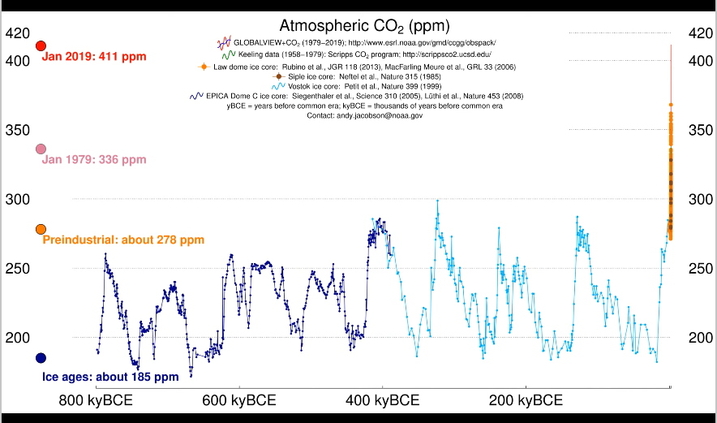
In the graph above, the atmospheric CO2 concentration over the last 800K years is shown. On the left side of the graph is the concentration at 800K years ago. So as you move to the right, you see the concentrations as we approach present day. Over the last 800K years the CO2 concentration cycled periodically between the lows and highs quoted in the last paragraph. The CO2 levels cycle from highs to lows as the Earth moved in and out of glacial cycles. At the end of the graph at the right is present day. That orange spike looks vertical because the spike in CO2 levels occurred in less than 80 years.
If you were an alien visiting this planet for the first time and you took historical data about CO2 levels, you would conclude that there must have been some sort of catastrophe at that point in time. That is how far out of character with respect to geological history this spike is.
The image below is an animation of atmospheric CO2 time series readings gathered from all over both hemispheres between Jan of 1979 and Jan 2019. The values on the horizontal axis of the left graph represent the latitudinal positions of the reading stations. Notice that during the animation you can see that the points near 90 degrees N (North Pole) experience a much more volatile fluctuation in CO2 concentration than the rest of the latitudes.
The above Youtube video comes from a web page that contains other links that, among other things, give the trends in CH4 which is methane. Methane also plays an important role in the climate's behavior.
Over the last 20 years, data collecting satellites have been put into place that are able to monitor all climate properties, including CO2 concentrations. The animation below shows CO2 concentrations over the time between 2002 and 2008. In this animation, the data from Mauna Loa is superimposed over the map. Notice that the CO2 levels vary regularly with the seasons.
Let's do the same historical/present comparison for global temperature.
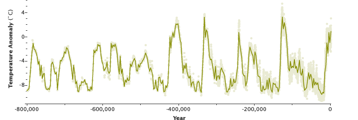
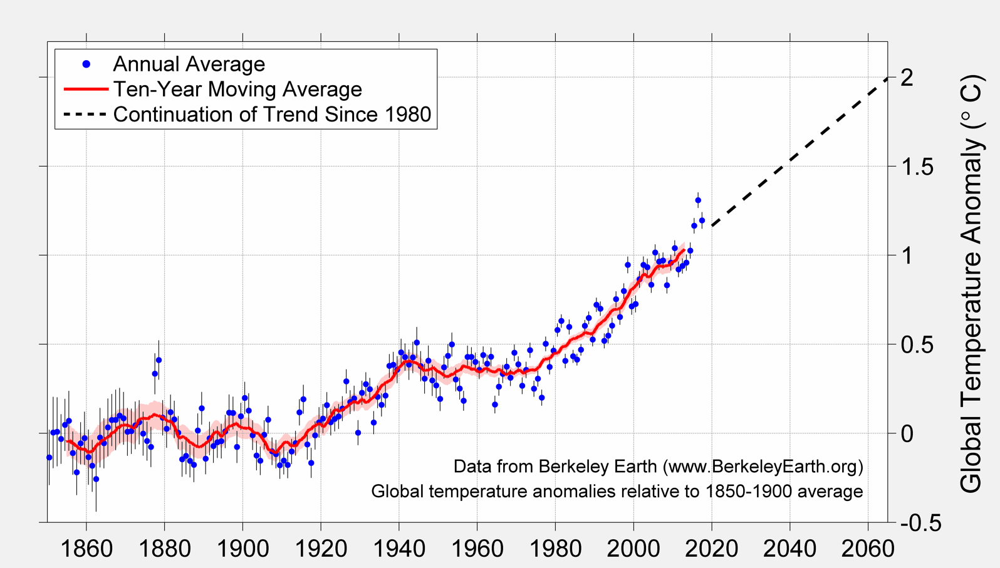
The temperature anomaly data on the left green graph is from the geological history plotted for the last 800K years, while the data on the right is only for the last 160 years. If you were to examine the glacial periods (left graph) and measure the rise in temperature from the cold glacial part to the warm interglacial period, you would get a temperature rise rate of about 4°C to 9°C over about 20,000 years. If we were to take the largest temperature rise of 9°C over 20,000 years, we get a temperature rise rate of 0.00045°C per year. Now measure the same temperature rise rate for the present data (right graph). Over the last 40 years (from 1980 to present) the temperature has risen at a rate of about 0.02°C per year. So these two graphs show that in the last 40 years our recent temperature rate of change is about 40 times higher than the rates measured in the 800K year geological historical data.
Even though I showed the calculation of the rate of temperature increase per year, it is difficult to get a feel of just how significant that is. So below is an animation produced by NASA that color codes surface temperature change from 1880–2020 in real time:
There are four take-aways from looking at historical and present CO2 and temperature data:
- For the last 800,000 years of Earth's history, the CO2 levels have ranged from 175 ppm to 290 ppm. Present measured levels are at 414 ppm, which is over 100 ppm higher than ever measured in the last 800,000 years.
- After the last glacial event, it took about 10,000 years for CO2 levels to go from 180 ppm to 280 ppm. That is, it took 10,000 years for CO2 levels to increase by 100 ppm.
- It took only 120 years for those levels to go from 280 ppm up to today's 412 ppm. That is, in modern times, it took only 120 years for those levels to increase by 130 ppm. The magnitude of this spike over such a short period of time has not been measured in the 800,000 years of geological history.
- The rate of temperature rise in the last 40 years is about 40 times greater than has been seen in the last 800K years.
So far we have presented well documented historical climate data. We have presented the Milankovitch Cycles models that match the geological historical data. And we have presented present atmospheric CO2 and temperature data and compared that present data with the geological historical data. At this point you should get the idea that the present atmospheric CO2 concentrations are off the chart when compared with the geological historical data. So the next question to investigate is: "How significant is the spike in atmospheric CO2 and how does it affect global temperature?"
What Are Greenhouse Gases?
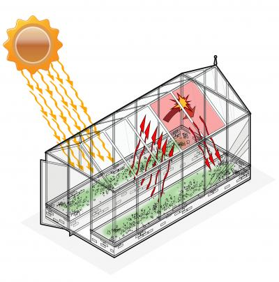
Consider the concept of a greenhouse where farmers grow plants. The greenhouse harvests the sun's energy to keep the air inside warm even if it is much cooler outside. If you have never seen a greenhouse or been inside one, just remember the last time you got into your car that was parked outside in the sun. The heat you experience inside the car is caused by a simple mechanism:
- Sunlight strikes the glass and some of the light is reflected back outside the glass while most passes through the glass and enters the interior.
- The incoming light heats up any surface that it strikes inside the greenhouse or car.
- The heated surfaces inside radiate heat in the form of infrared radiation.
- Infrared radiation has a longer wavelength than sunlight and because of the physical properties of glass, that infrared radiation cannot pass through the glass to escape. Instead it is reflected back inside and strikes the interior surface again, thus heating the interior surface more. In addition, that reflected infrared radiation heats up the air inside.
Some gases on Earth work in a similar way to capture infrared radiation. The most significant of those gases are CO2 carbon dioxide, CH4 methane, and H2O water vapor. While they interact with infrared radiation differently from glass, their effect on the infrared radiation is similar. That is why they are called greenhouse gases.
Greenhouse gases do not reflect infrared radiation as glass does. Instead, when infrared radiation strikes a greenhouse gas molecule, the molecule heats up (vibrates) and in turn radiates infrared radiation in all directions.
Let's do a thought experiment. Imagine taking a glass greenhouse and somehow replacing all the glass with a layer of greenhouse gases. The mechanism of capturing heat is similar but not identical to the glass greenhouse:
- Sunlight passes through the gas layer and enters the interior of the greenhouse.
- The incoming light heats up any surface that it strikes inside the greenhouse.
- The heated surfaces of the greenhouse radiate heat in the form of infrared radiation.
- Some of the generated infrared radiation from the interior surfaces strikes the gas molecules, heating those molecules. There is a portion of the infrared radiation that does not strike any gas molecules and that radiation escapes the greenhouse. The heated gas molecules in turn generate infrared radiation in all directions. Some of that generated infrared radiation strikes other gas molecules, some strikes the interior surface, and some escapes from the greenhouse.
The last point is important. The effectiveness of the greenhouse depends upon how many greenhouse gas molecules we place in the "walls". The more greenhouse gas molecules we put into the layer "walls", the warmer will be the interior of the greenhouse.
The Earth has a similar "gas wall" (called the troposphere) that contains some greenhouse gases. This troposphere is about 20 km (12 miles) thick. The short video below shows in a graphical way how the greenhouse gas molecules warm Earth's atmosphere.
The greenhouse effect on our atmosphere was first discovered by Joseph Fourier in 1824, was experimentally verified by John Tyndall in 1863, and quantified by Svante Arrhenius in 1896. The latter established that water vapor and CO2 are the main greenhouse gases.
One final statistic about greenhouse gases. The Earth's 20th century global average temperature is 54.0°F. A simple calculation using the Stefan-Boltzmann law shows that without greenhouse gases the Earth's global average temperature would be 0°F.
Why All the Fuss About Greenhouse Gases?
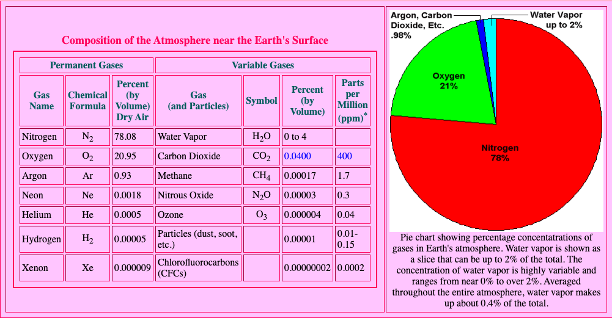
The title of this section is a valid question. Earth's atmosphere is composed of a mix of several different gases. The table in the left part of the image shows the percent by volume of the various gases. As you can see in the pie chart, Nitrogen and Oxygen make up about 99% of Earth's atmosphere. CO2 makes up only 0.04% of the Earth's atmosphere. In fact, all of the greenhouse gases combined make up less than 1% of the Earth's atmosphere. So you can see why the title of this section is indeed a valid question. Notice also that the water vapor concentration is variable. This is because water vapor is the only greenhouse gas in Earth's atmosphere that is condensible. That is, water vapor condenses to liquid water when sufficiently cooled. So whether water at any point on Earth is a gas or a liquid or a solid depends upon the temperature at that point. That is why it is not possible to specify an exact percent by volume of water vapor. So in order to get a figure, we take the average percent by volume (0.4%) throughout the entire atmosphere.
If we compare the percent by volume of the main greenhouse gases, we see that water vapor is by far the most significant greenhouse gas. In fact, water vapor is about 10 times more abundant than CO2.
So you can see that as a Climate Scientist you would have two perplexing questions that need answers:
- Since greenhouse gas volumes are just traces by volume, how could a change in a trace volume make a large scale difference in global temperature?
- If water vapor is so much more abundant, then as a greenhouse gas, shouldn't it have a much greater effect on the climate than CO2?
Two Kinds of Greenhouse Gases
Even though water vapor and CO2 both act as greenhouse gases, they have one important difference. In the Earth's environment, water vapor is condensable while CO2 is not. A gas that is condensible is able to change from gas form to liquid form and back again, depending on temperature and pressure. Water vapor is invisible to the human eye. Whenever you see a cloud in the sky, that is liquid water. At the bottom of the cloud the temperature and pressure are right at the transition point where condensation happens.
The condensable property of water vapor makes this greenhouse gas behave in a manner that depends upon temperature. When the global temperature is high, the atmosphere is able to hold more water vapor (think about humid days). When global temperature is low, the atmosphere is not able to support as much water vapor. Therefore the amount of water vapor in Earth's atmosphere depends upon its global temperature.
During a typical ice age, the global average temperature is about 8°C. During an interglacial period like the present the global average temperature is about 12.7°C. So during a glacial period the atmospheric water vapor concentration is much lower than it is during an interglacial period.
Water Vapor and Carbon Dioxide: A Great Partnership
In order to answer the above two questions, scientists from the NASA Goddard Institute for Space Studies created a climate model called ModelE. ModelE has the flexibility to change parameters such as greenhouse gas concentrations. This gave the scientists the ability to do "What if..." experiments. In order to separate the roles that water vapor and CO2 play, the scientists ran a "what if" simulation using ModelE. This simulation removed all the noncondensing greenhouse gases (CO2, CH4, etc.), leaving only water vapor. The results were very informative. ModelE showed that the Earth's climate rapidly changed to an icebound state after about only 50 years.
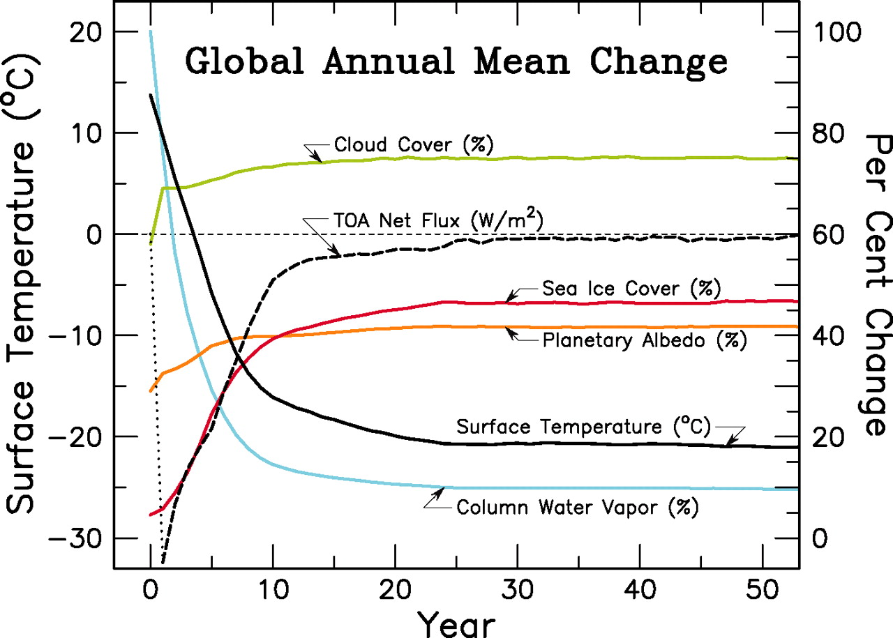
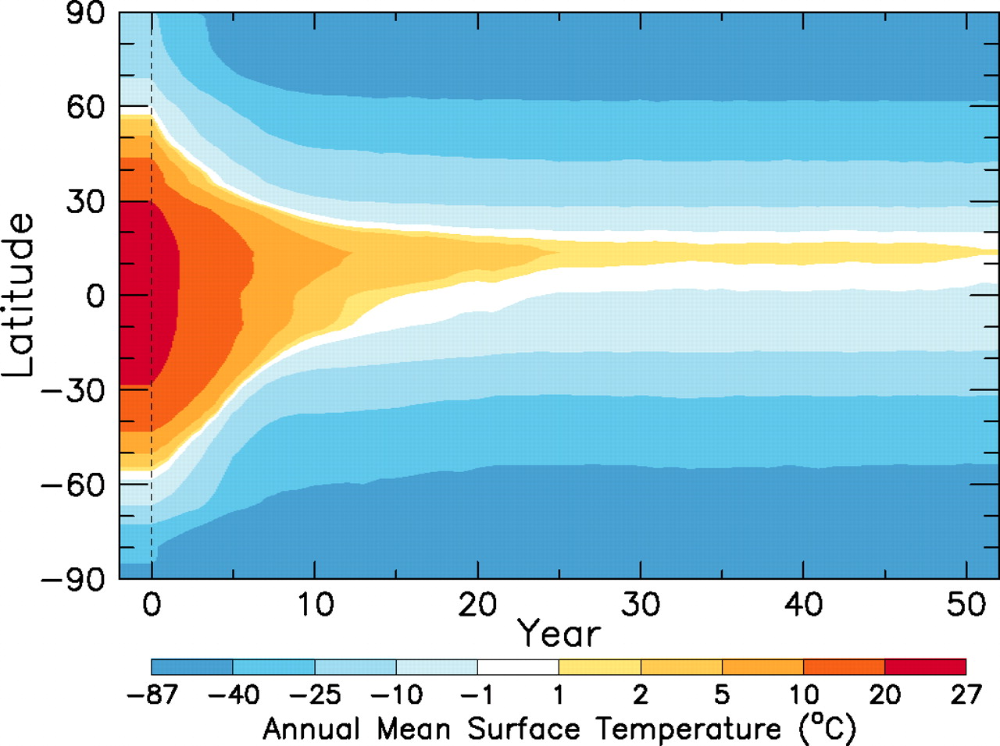
The graph in the upper left shows results for the model experiment where all noncondensing greenhouse gases (everything but water) were removed from the atmosphere. Of most important interest are the two curves colored in solid black and blue. The solid black curve shows Earth's surface temperature over time while the blue curve shows the atmosphere's percent water vapor. As you can see, surface temperature went from our familiar 15°C down to below −20°C. And the atmospheric water vapor decreased by 90%.
The graph in the upper right shows surface temperature for different latitudes over the same 50 year period. Notice that as we start at present time (0), the latitudes between +50° and −50° start as warm with the warmest near the equator (0°). As time proceeds, temperatures at all latitudes decrease to a steady state of frozen except at the equator.
The results of this experiment clearly show that the noncondensing greenhouse gases, as small as their concentrations may be, are essential in maintaining atmospheric temperatures that are needed to maintain sufficient levels of water vapor. The ModelE simulation was described in an article published in Science in October 2010.
So water vapor has been identified as a greenhouse gas that responds rapidly to changes in temperature. It evaporates, condenses, and precipitates depending upon temperature and pressure. In Climate Science this behavior is called a "fast feedback" process. Water vapor accounts for about 50% of Earth's greenhouse effect with clouds contributing 25%, CO2 contributing 20% and the rest of the greenhouse gases contributing about 5%.
As has been discussed earlier, the amount of atmospheric water vapor is determined by the global temperature. Therefore global atmospheric water vapor concentration takes its cue from changes in global temperature. When water vapor concentration increases, its greenhouse effect increases global temperature, which in turn, leads to an increase in water vapor concentration. That is, the water vapor on its own does not drive any climate change. It takes some other factor to initiate a change.
If some external force such as increased insolation (Milankovitch Cycles) is applied to the Earth's climate system, then the global temperature would rise and that would cause an increase in water vapor, which would in turn add to the greenhouse effect and would warm the planet. Another external force such as an increase in CO2 emissions would put more greenhouse gas into the atmosphere. The small amount of heat captured by this additional greenhouse gas would cause an increase in water vapor, which would in turn, capture an even greater amount of heat.
Even though water vapor is by far the largest contributor to the mechanism of the greenhouse effect, its role is an amplifier rather than a controller. So water vapor does the heavy lifting while the noncondensing greenhouse gases act as the controller to climate change.
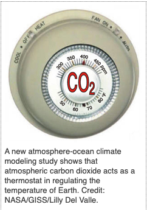
The folks at NASA made the image on the left that describes how CO2 acts as a controller of Earth's temperature. If you want to change the Earth's temperature (shown at the bottom of the thermostat), you just dial the CO2 level, and that level regulates how much water vapor is in the atmosphere, and that water vapor acting as a greenhouse gas captures the infrared radiation that warms the planet.
Where Could This Additional CO2 Possibly Come From?
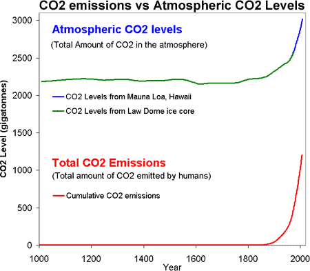
Natural (non-human) sources of CO2 are: outgassing from oceans, decomposing biomass, volcanoes, and wildfires. These CO2 producing sources are offset by CO2 absorbers such as photosynthesis by plants, absorption by ocean waters, and the creation of soil and peat. As stated earlier the baseline for atmospheric CO2 during the last 800K years ranges from 175 ppm to 290 ppm. For at least the last 800K years the combination of sources and absorbers have maintained a balance of CO2 levels to that baseline range.
However, at some point in the late 1950's the atmospheric CO2 level crossed out of the baseline range and passed 300 ppm for the first time in at least 800K years. On the scale of 800K years, this level appears as a vertical spike. There is no known natural source of CO2 that could cause such a rapid and significant spike over the last 800K years.
The graph on the left shows recent atmospheric CO2 levels and CO2 human generated emissions plotted on the same time scale. This graph would make a Climate Scientist suspicious that CO2 emissions from human activity may contribute heavily to the rise in atmospheric CO2 concentrations. So how can we confirm those suspicions? It would be nice if we could tell the difference between the CO2 caused by human activity from the CO2 from natural sources.
There is a scientific method that can differentiate sources of CO2 emissions. This method measures CO2 isotope ratios. Isotopes of an element have the same number of protons but different numbers of neutrons in their nuclei. Isotopes of an element all have the same chemical properties even though their atomic mass differ, because all the isotopes of an element have the same number of electrons.
The three isotopes of carbon are:
- Carbon-12 (denoted 12C), which has 6 protons and 6 neutrons.
- Carbon-13 (denoted 13C), which has 6 protons and 7 neutrons.
- Carbon-14 (denoted 14C), which has 6 protons and 8 neutrons.
So CO2 can be made of any of the Carbon isotopes. Of the three isotopes of Carbon, 12C is the most abundant and this isotope accounts for about 99% of all the CO2 in the atmosphere. The Carbon isotope 13C accounts for only about 1% of the atmospheric CO2. The Carbon isotope, 14C is unstable (radioactive) and has a half-life of a little over 5,000 years. Since 14C is unstable with such a relatively short half-life, it appears as only a trace in the atmosphere.
Because of their differing atomic masses, in the presence of a gravitational field, 14C is heavier than 13C, which in turn is heavier than 12C.
In 1961 two scientists (R. Park and S. Epstein) from Cal Tech published ground breaking research where they found that plant photosynthesis has a preference for 12C over 13C. This preference is just a result of the fact that the heavier 13C is filtered out of the photosynthesis process in favor of 12C. Therefore, plant material has a lower ratio of 13C / 12C as compared to the air surrounding the plant. The plant ratio of 13C / 12C is about 2% lower than that of the atmosphere.
The ratio of 13C / 12C found in all plant material remains the same long after the plant dies. In fact, even plant fossils retain that ratio. This is an important factor because as humans extract and burn these fossils, the carbon in the fossils combines with oxygen in the air to form CO2, and this released gas has the same 13C / 12C ratio as the original fossil material. As this newly released gas mixes with the atmosphere, the average 13C / 12C ratio of the atmosphere actually decreases.
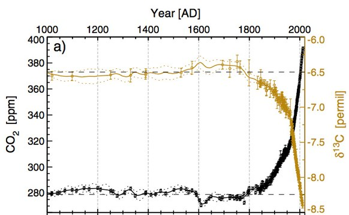
The graph on the left shows CO2 concentrations (black) over the last 1,000 years plotted on the same time scale against the 13C / 12C ratio (gold) that has been normalized. The symbol δ13C [permil] is a normalization of the actual ratio. Even if you do not understand the mathematical concept of the 13C / 12C ratio or the normalization of that ratio, you can see that the ratio starts to take a dive at about the time of the industrial revolution, that is the early 1800's. The dive gets steeper as we approach present day. The combustion of fossils dumps large amounts of 12C into the atmosphere. We would then expect the ratio 13C / 12C to get smaller because the denominator gets larger.
The decline in the 13C / 12C ratio is solid evidence that the documented increase in atmospheric CO2 comes from the combustion of plant material, most of which is fossil fuels.
But wait — there's more. Let's look at the radioactive isotope of carbon, 14C.
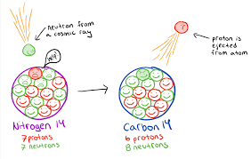
The drawing on the left shows a schematic of how 14C is produced in the Earth's atmosphere. This schematic shows that 14C is produced by a nuclear reaction of a neutron and a nitrogen atom 14N. The neutron is supplied indirectly from a cosmic ray. Cosmic rays are high-speed particles that originate mostly from the sun, but also reach Earth from distant stars and even other galaxies. The cosmic ray hits an atom in the upper atmosphere and neutrons as well as other nuclear particles are released. One of these neutrons strikes a nitrogen atom (7 neutrons, 7 protons) and this neutron replaces a proton in the nitrogen nucleus. So now we have an atom of atomic mass of 14 (6 protons + 8 neutrons) with 6 electrons. That new atom is 14C.
The newly created 14C is atomically unstable and eventually decays back to a 14N atom. It takes 5,730 years for 1/2 of a mass of 14C to decay back to a mass of 14N.
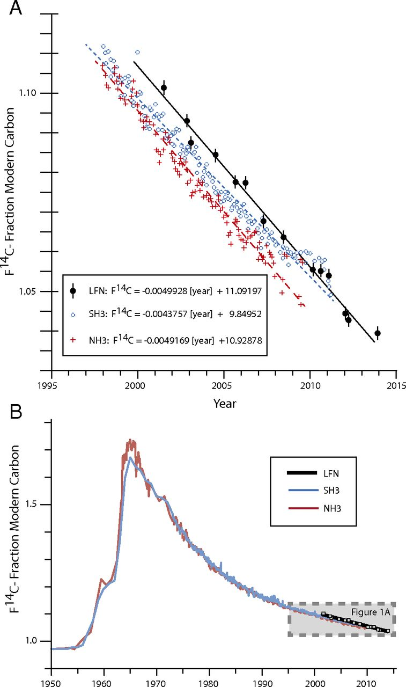
Since the mid 1940's scientists have used the known decay rate of 14C to date organic materials. This radiocarbon dating method makes the assumption that the amount of 14C in the atmosphere is constant. This was true up until the mid 1950's when countries started detonating nuclear devices in the atmosphere. Those detonations radically increased the 14C concentration of the atmosphere. The plots at the left show 14C concentration over recent time. Plot "B" shows the 14C concentration from 1950 through 2014. Plot "A" shows a closer detail for the time span from 1995 to 2014.
Notice in plot "B" the spike in 14C caused by atmospheric nuclear testing. Note that the nuclear devices do not directly produce 14C. Instead they produce neutrons that react with atmospheric nitrogen to produce 14C, just like cosmic rays indirectly supply the neutrons.
There are no known natural consumers of 14C except the natural carbon cycle, so one would expect the 14C level to remain somewhere near the peak that was reached in the late 1960's. However we can see a definite depletion of the 14C levels over a short amount of time. Recall that 14C has a half-life of 5,730 years. So plant fossil material that is millions of years old would be depleted of 14C. When that fossil material is burned, the resulting CO2 will have no 14C. So the burning of fossil fuel adds CO2 that is depleted of 14C. In other words the burning of fossil fuel dilutes the level of 14C in the atmosphere, and the plots at the left certainly support that notion.
The method of isotope fractionation (the declining 13C / 12C ratio and declining 14C concentration) separates the human sources from the natural sources of atmospheric CO2. We can conclude that the spike in the atmospheric CO2 levels is definitely the result of human activity and not the result of some other natural cause.
Conclusions From the Data
- The Earth's climate history is a combination of orbital and axis alignment cycles. These cycles drive the climate to vary between ice ages (on the large time scale) and glacial with interglacial periods. During these cycles greenhouse gases and temperatures fluctuate over geological time.
- Measurements show that in the last 250 years, greenhouse gases and temperatures have risen at rates that are much higher than those in geological historical times.
- Isotope fractionation shows that the sharp increase in CO2 comes from human activities, in particular, the burning of fossil fuels.
Based on all of the data collected for the geological past and present together with the Milankovitch Cycles, climate scientists create models that project future climate scenarios. One such model that was created by the NASA Goddard Institute for Space Studies is shown below. It shows temperature anomalies based on the 30-year average surface temperature from 1951 to 1980. The time series runs from 1870 to 2100.
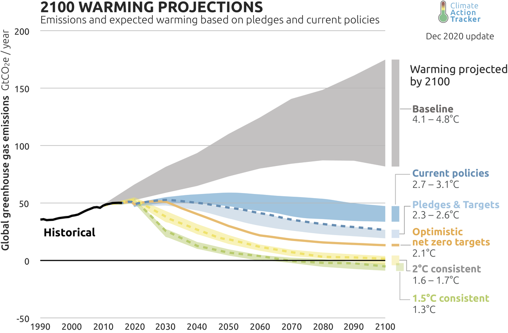
In addition to the above model, climate scientists have put together model data that compares different future scenarios. The graph on the left shows the projections of these scenarios. Of most important interest are the projections colored in gray and darker blue. The gray colored graph shows the emission projection and resulting temperature increase if nations continue increasing emissions at the current rates. The darker blue graph shows the emission projection and resulting temperature increase if nations carry out current policies that have already been adopted by the world's nations.
Notice that the projected temperature increase is 4.1–4.8°C over the average temperature during the period of 1971–1999. Remember that the geological history data records a temperature increase of about 5°C that moved the Earth from a glacial period to a warmer interglacial period (over 5,000 years). So the projected temperature increase of 4.1–4.8°C in less than 100 years is something not seen during the last 800K years and beyond.
But What About … Volcanoes?
What about greenhouse gases emitted by volcanoes? The 1980 eruption of Mount St. Helens emitted about 10 million tons of CO2. The 1991 eruption of Mount Pinatubo emitted about 50 million tons of CO2. Even though these volcanic eruptions are spectacular, their emissions are small when compared to other active volcanoes that emit gases on a daily basis. For example, Mt. Etna emits 5.8 million tons per year.
In fact there are many other sources of CO2 emitting volcanoes that go unnoticed. There are volcanic lakes where the volcanic cone gets filled with water. There are additional emissions from tectonic and hydrothermal volcanoes. There are mid-ocean ridges that also contribute to emissions.
In 2013 a project was completed that took a complete inventory of all known volcanic sources of CO2. An update was done in 2019. The estimate of CO2 emissions from all sources was established at 0.645 Gt (that is 645 million tonnes).
Compare the CO2 emissions from all volcanic activity over a year (2019), which is 0.645 Gt, with the total emissions produced by human activity, which is about 33 Gt.
So what about volcanoes? Not much when compared with what humans are producing.
But What About … Sunspots?
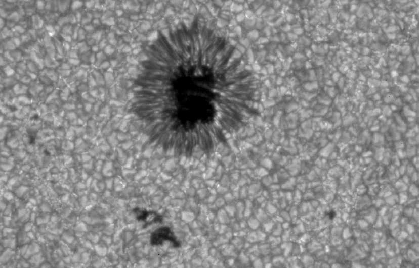
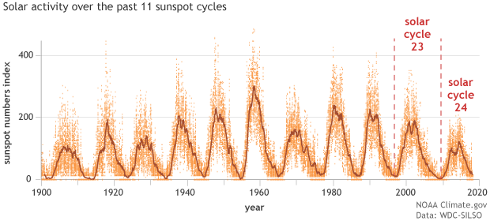
Records of sunspots go back a couple thousand years or more. The image on the upper left shows a close-up of a sunspot. Since the middle of the spot is dark, it was correctly assumed that the spot was cooler than the rest of the sun's surface. Observers noticed that the sunspots moved across the face of the sun and would eventually disappear, only to reappear on the other side of the face.
In the mid 1800's, it was determined that there is a recognizable sunspot cycle of about 11 years. During one of these cycles the number of sunspots will go from zero to up to a couple of hundred. The image in the upper right shows sunspot count for the last 11 sunspot cycles. It seems to be part of human nature to try to find correlations between newly discovered cycles and events on Earth.
The discovery of sunspot cycles was no exception. Using observations that were available in the mid 1800's, scientists speculated that sunspots reflected some kind of storminess on the sun's surface, which could lead to variability in the sun's energy output, which in turn could lead to climate changes on Earth. However, given the available technology at that time, inaccurate and unstandardized weather data, and the lack of statistical techniques to analyze the data made it impossible to reach any conclusions about the possible correlation between weather patterns and sunspot activity.
As the 1900's rolled on, the study of the 11-year sunspot cycle was backed by better measuring instruments, and it was found that in the last 130 years the length of the cycle varied between 10 and 12 years. Of course this launched a whole new effort to find correlations between climate and the length of the sunspot cycles. Alas, by the beginning of the 2000's this new effort also failed because of new observed data. The more recent data showed that the cycle length increased as the global temperature increased. So much for that idea.
Regardless of whether correlations between solar activity and global temperature have been found, the more important question is: Does solar activity change explain the sudden increase in today's average global temperature? The answer is: NO.
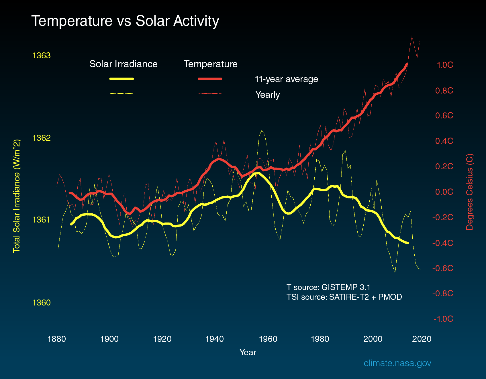
Since the late 1970's, with the help of satellite data and a recent reconstruction of solar irradiance since 1700 (abstract here), we get an accurate picture of the total solar irradiance over that period of time. The image on the left shows the solar irradiance since 1890 graphed on the same time scale as temperature departure (temperature anomaly) from the global average between 1850 and 1970. If the amount of energy from the sun fluctuated, we would expect the Earth's temperature to follow suit, which it did up until around 1960. Then something drastic happened. Since 1960, while the total solar irradiance remained constant, or even decreased slightly, the Earth's temperature anomaly increased by about 0.8°C.
So it appears that perhaps in recent history, before human CO2 emissions started to pile up, the change in total solar irradiance did have a small effect on average global temperature. However, the influence of total solar irradiance on global temperature is dwarfed by that of human CO2 emissions.
It should be noted that current Climate Models do include the variations in the solar irradiance. While you can see that the contribution of solar irradiance variations to climate changes is small, calculations that have been added to the Models introduce only about 0.1% variation in energy. Also it should be noted that the sun is currently in the part of its cycle where total irradiance has decreased and is still decreasing.
There are a couple of additional arguments that show that solar irradiance variations do not significantly contribute to tropospheric temperature changes.
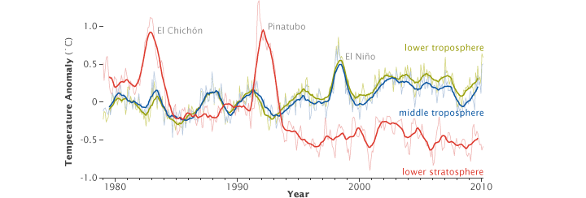
The graph on the left shows temperature changes for the troposphere (green and blue) and stratosphere (red). If the solar irradiance were to increase, both the troposphere and stratosphere should warm. According to the data in the graph, the stratosphere is actually cooling as time passes while the troposphere temperatures rise.
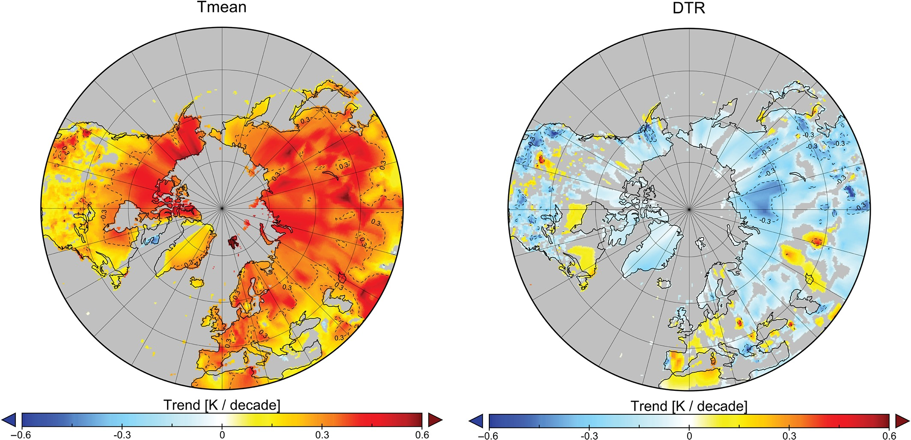
If the solar irradiance were to increase, the daytime temperatures should increase more than the nighttime temperatures, since in this scenario the surface of the Earth gets more solar radiation during the day. In Climatology, the term diurnal refers to the Earth's 24-hour cycle. The daily high temperature is referred to as the diurnal maximum (Tmax) while the daily minimum temperature is referred to as the diurnal minimum (Tmin). The difference between the daily maximum and daily minimum temperature is called the diurnal temperature range (DTR = Tmax − Tmin). During the 20th century, the DTR has been shrinking because the diurnal minimum has been warming faster than the diurnal maximum. That is to say, the overnight low is warming faster than the daytime high.
The image on the left contains two color coded graphs. The left graph (labeled Tmean) shows the rate of change of the mean temperature per decade. The right graph (labeled DTR) shows the rate of change of the DTR. Notice that while the left graph shows that the rate of the mean temperature change per decade is increasing (red, orange, and yellow), the rate of DTR change is decreasing (light blue to dark blue) for most of the northern hemisphere. Simply put, the overnight lows are warming faster than the daytime highs.
This fantastic paper published in 2016 does a thorough job of explaining the calculations, and reaches the conclusion that increased solar irradiance cannot be a significant cause of the observed decreasing diurnal temperature range.
So the above three arguments — cooling stratosphere, decreasing diurnal temperature range, and decreasing stratospheric temperature — put to rest any conjecture that variations in the solar irradiance significantly contribute to the observed global temperature rise.
But What About … Very Cold Snaps?
"It's freezing outside. How can this happen if we have global warming?"
Remember on Feb 26, 2015, senator James Inhofe, chair of the Senate Environment Committee, brought into the Senate floor a snowball from outside. "You know what this is?" asked Inhofe. "It's a snowball, from outside here. So it's very, very cold out. Very unseasonable."
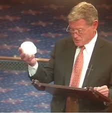
It is difficult to logically respond to such an illogical statement. But — even if we were to advance 80 years into the future when global temperatures are about 5°C higher, we would still have polar ice and we would still have seasons, including winter, because of the Earth's axis tilt. It will not be surprising to see February snow in D.C.
A much more intelligent question would be "How can we have record cold snaps when the climate is supposed to be warming?" There is a logical explanation for this question, but it takes a little bit of understanding of what drives the Earth's weather patterns. Notice that up to now we have never used the term "weather". That is because the term "climate" refers to average conditions over an extended period of time. Weather is the study of how the energy from the sun is distributed over the Earth.
Because of the way the Earth receives energy from the sun, there are places on our globe that receive more solar energy than other places. It is obvious that the region near the equator receives more solar energy than at the poles. This causes an uneven distribution of energy throughout the globe. Put in simple terms, there is a thermodynamic tendency to try to establish an equilibrium in the energy distribution. As warm air rises, cold air is sucked into the vacated region. This causes air circulation patterns in our globe.
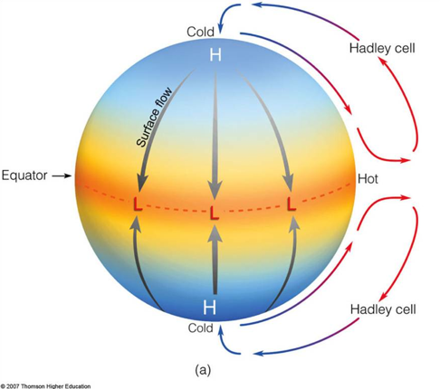
If the earth did not rotate at all, or if the troposphere height doubled what it is now, we would have circulation as shown in the image on the left. There would be a permanent high pressure at each pole and low pressure all around the equator. Surface air at the equator is heated, it rises and sucks cold air from the poles. So there would be one convection cell for each hemisphere.
However, since the Earth does rotate, and the troposphere is a thin 15 km high, the dynamics of the convection drastically changes. The flow of air from the equator north to the pole is broken up into 3 convection cells. The complete explanation of the convection cells under the influence of the Earth's rotation could be the subject of a whole article on its own.
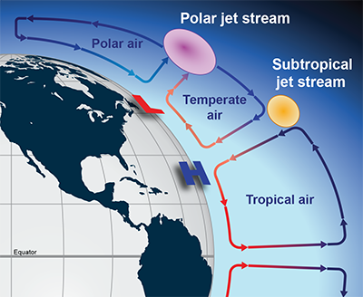
The image on the left shows a cross section of the Earth's troposphere and lower stratosphere. In each hemisphere there are three convection cells of air. The three cells circulate like gears. Each convection cell takes up about 30° of latitude.
If we focus on the northern hemisphere, the three convection cells are defined by the temperature and moisture of the air that they contain. The cell at the equator that extends to about latitude 30°N contains warm moist tropical air. The cell that approximately occupies the latitudes 30°N and 60°N contains cooler temperate air. The cell that approximately occupies the latitudes 60°N and 90°N (North Pole) contains cold dry polar air.
Since a colder air mass (high pressure area) is more dense than a warmer air mass (low pressure area), there is actually a horizontal air pressure difference between the two masses and this pressure difference causes winds. The strength of the winds depends upon the difference in pressures of the two air masses. The winds would normally flow from high pressure to low pressure, but the Earth's rotation causes the winds to deflect in the direction that the Earth is rotating (eastward). This wind that flows between convection cells is called a jet stream.
So in the northern hemisphere there are two jet streams: one between the tropical air cell and the temperate air cell and another between the temperate air cell and the polar air cell. These jet streams are referred to as the Subtropical jet and the Polar jet respectively. The jet streams form a boundary between air masses of different temperature and moisture. Weather on Earth depends upon where the jet streams are located.
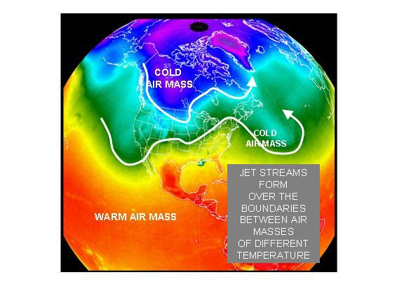
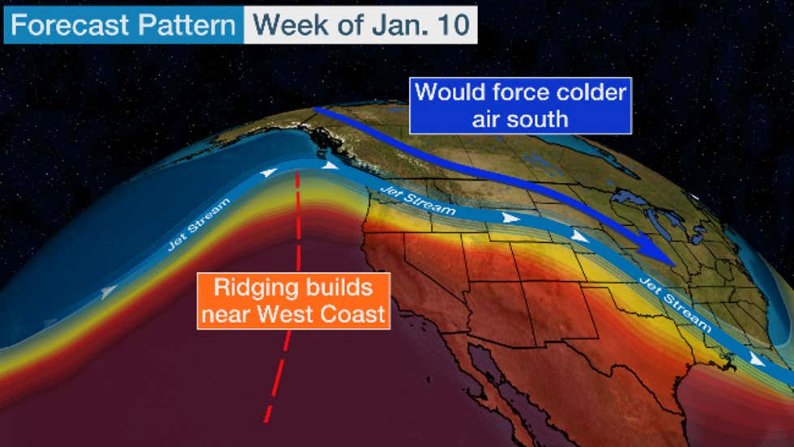
The image in the upper left is worth thousands of words. First you see three colors that represent the three convection cells: blue-polar air mass, green-temperate air mass, red-tropical air mass. The white line between the blue and green indicates the path of the Polar jet stream, while the white line between the green and red indicates the Subtropical jet stream. Any point on the surface that is north of the Subtropical jet stream is cooler, while to the south of that jet stream is warmer.
Notice that we can generally tell what kind of weather folks are having just by looking at their position with respect to the jet streams. Most of the South and Southeast are in warm air while most of the West Coast, Midwest and Northeast are in cooler air. And part of Montana and North Dakota are bathed in polar cold air.
Notice that the jet streams do not move strictly in a zonal west-to-east flow. They sometimes take north and south directions as well. Generally, the wild north-south meanderings of the Subtropical jet stream take place in the winter, while the summer generally brings zonal flow.
So what about the original question in this section? In order to do so it was necessary to bring you up to speed on what are the main factors that affect our daily weather. You have seen that the position of the jet streams determines the location of cold (and warm) air masses. Since the original question is about extreme cold during the winter, let's take a look at the conditions in the North Polar region.
The Polar jet stream is associated with the boundary between polar cold air in the north and subtropical warmer air in the middle latitudes. In the northern hemisphere's winter, the Polar jet stream encircles a larger area than in the summer. That is, it creeps south during the winter. Generally, since the north-south temperature difference is greater in winter than summer, the Polar jet stream winds are faster in winter.
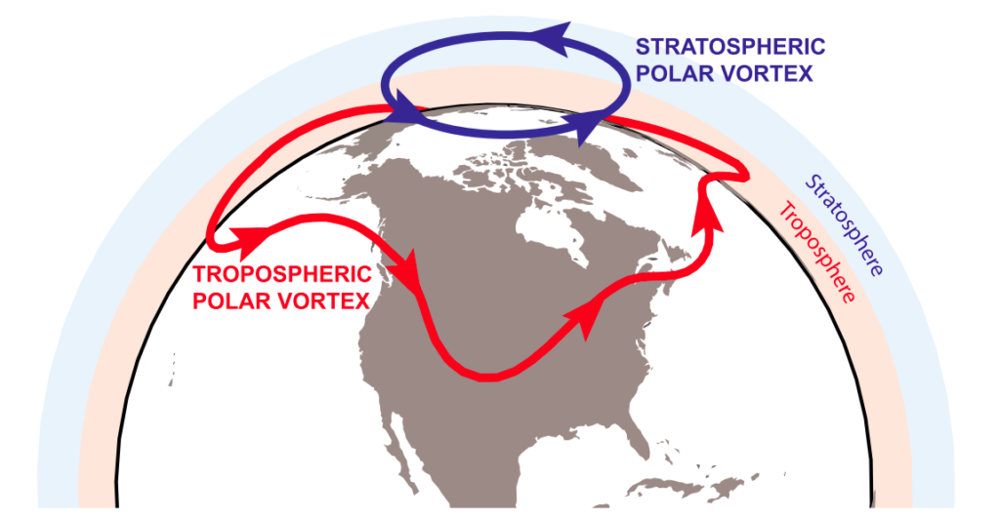
There are two major weather factors in the polar region. One is the Polar jet stream (named tropospheric polar vortex in red in the image to the left) mentioned above. The other is a mass of cold air at the North Pole that rotates in the direction of the Earth's rotation, from west to east around the pole. This is not a jet stream, but rather a rotating weather system whose center normally sits over the pole. This weather system is called the stratospheric polar vortex, commonly known as the Polar Vortex. Unlike weather systems that influence our weather in the troposphere, the polar vortex occurs in the stratosphere, high above the troposphere. The stratosphere layer starts at about 8 km (4.8 mi) above the Earth's surface.
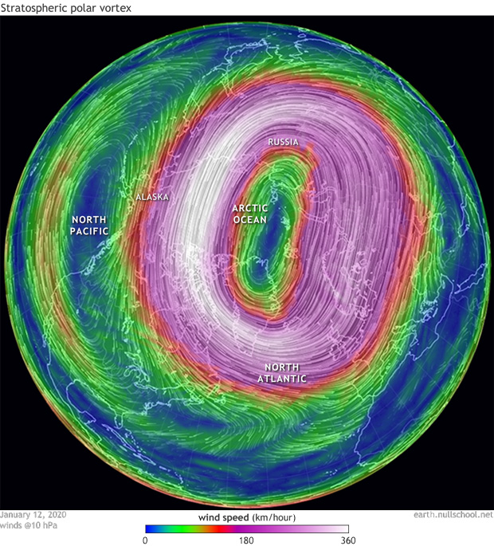
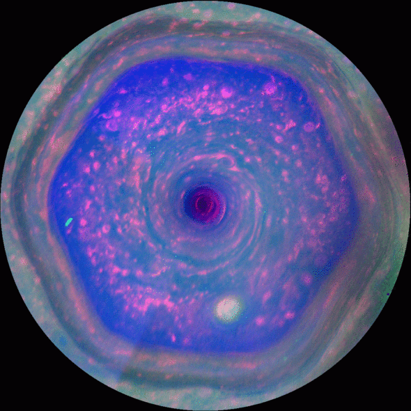
The Polar Vortex was first theorized in the 1850's and was later confirmed in the 1950's with the use of high-altitude weather balloons. Since the 1970's, scientists have identified the cause of the extreme cold weather in the Midwest and eastern part of the US to be caused by Polar Vortex events. Today all the conditions of the Polar Vortex are recorded by satellites.
Normally, the circulation of the Polar Vortex is a tight well-defined ring around the pole as shown in the upper left image. Saturn also has a Polar Vortex as was photographed by the Cassini spacecraft (upper right). Venus also has a Polar Vortex.
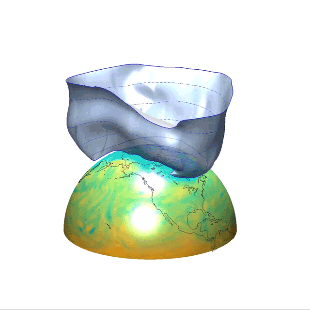
The image on the left is a 3D animation of data collected from satellites. It shows the boundary of the frigid polar air as the Polar Vortex rotates about the North Pole. This boundary is like a flexible bowl that holds in the polar air.
But occasionally, heated air from below in the troposphere is sent upwards (deflecting off mountains) in the form of waves. These waves interact with the Polar Vortex in the stratosphere and the tight, well-defined circulation is disturbed.
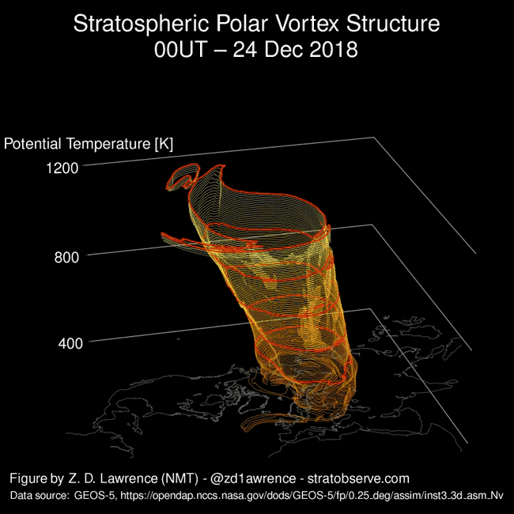

When warm waves from the troposphere disturb the tight circulation, the structure of the Polar Vortex can be extremely altered so much that it breaks into at least 2 or three parts as shown in the image on the left. A disturbance that started in late December of 2018 caused the Polar Vortex to break into three parts in January of 2019. The consequences were felt in the US during that period of time. The three parts of the Polar Vortex affected three separate geographic regions in the Northern Hemisphere, one of which was the central US. The image on the upper right shows another break-up of the Polar Vortex that occurred in January–February 2009.
From 1989 to 1998 there were normally two Polar Vortex events per year. In the next decade of the 2000's there were nine such events.
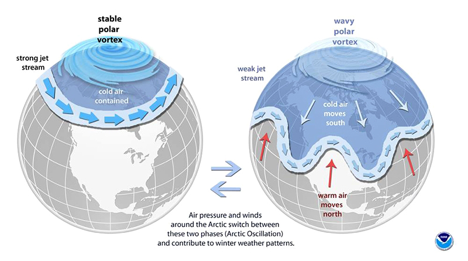
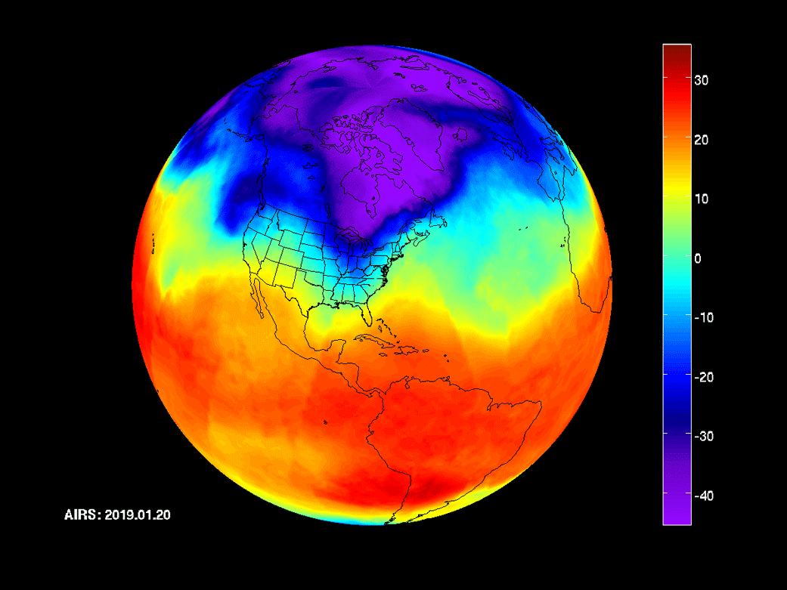
The image in the upper left shows a schematic of the difference between a strong, stable Polar Vortex and a weakened one. The image in the upper right shows the results of data collected from satellites in January of 2019. The disturbance of the Polar Vortex weakened the normally strong west-to-east rotation, and frigid polar air was freed to creep south until it met the Polar jet stream. The blue and purple regions show the incursion of the polar air into a large portion of the US.
During the weather event in 2019, the town of Mather, Wisconsin recorded a temperature of −43°F. Towns in Iowa, Illinois, Wisconsin, and Minnesota reported temperatures in the −20°F to −30°F range. Wind chills were in the −50°F range in these regions. The town of Cotton, Minnesota recorded the coldest temperature in the US of −56°F. In Chicago, the temperature reached −45°F. Even though the brunt of the incursion missed New York, the city still recorded 2°F on January 31.
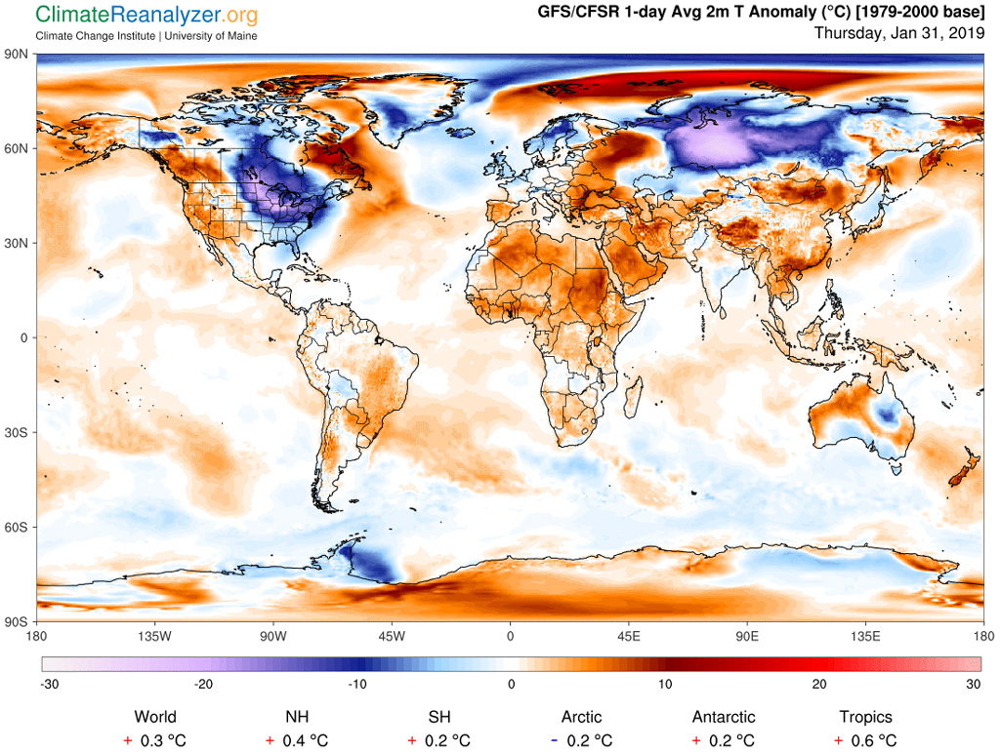
Now that we have seen how the instability of the Polar Vortex can lead to record low temperatures in regions on the Earth's surface, let's take a look at temperatures across the globe during an extreme Polar Vortex event in North America. The image on the left shows global temperatures in the Northern Hemisphere during a Polar Vortex event that took place in January of 2019. The different colors represent the temperature departure from average in °C. Certainly most of the US Midwest experienced a 10°C to 20°C drop in temperature from a Polar Vortex split as did regions in Eastern Russia. However, notice that at the same time, regions in Alaska, Eastern and Western Canada, the North Pole, and Western Russia, temperatures were anywhere from 10°C to 15°C above normal.
Notice the numbers at the bottom of the global temperatures image. For that day, Jan 31 2019, the world 1-day temperature anomaly was +0.3°C. That is on the same day that the Midwest US experienced a −20°C anomaly.
The major lesson learned in studying the Polar Vortex is that just because it is locally cold in one region, that does not necessarily mean that it is cold everywhere else on the globe. Therefore being cold, even extremely cold in a particular region does not qualify as an argument that the Earth's climate is not warming.
Keep in mind that weather events that are affected by the Polar Vortex bring on extreme conditions. Local weather can still normally have cold days and nights without the help of a Polar Vortex event. The explanation of why senator Inhofe can make a snowball in February does not even need the mention of the Polar Vortex. Even with the warming of the Earth's climate there will still be summer and winter due to the Earth's axis tilt. So there would still be snow in D.C. without the influence of the Polar Vortex. However, the data shows that we are having more Polar Vortex events than 20 years ago.
The cause of Polar Vortex events is still being studied by scientists. While there are a couple of viable theories on its cause, there is not yet enough data to bring all scientists to a consensus on the causes of such events. The most promising theory about what causes Polar Vortex events is based on temperature data collected by satellites.
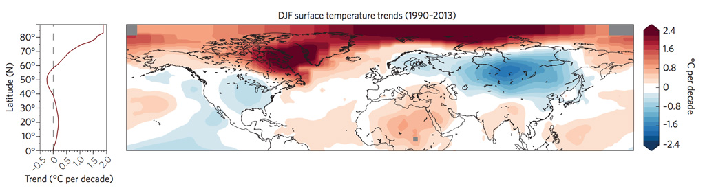
If you have a look at the image above, you see that the Arctic (North polar region) has heated up much more than the rest of the globe. This heating has reduced the temperature difference and hence the pressure difference (pressure gradient) between the Polar air mass and the Subtropical air mass. As a consequence, the Polar jet stream winds are less strong, and the typical zonal west-to-east flow is disrupted. Instead of a steady west-east flow, the Polar jet stream starts to meander and takes more southerly and northerly paths with peaks and troughs that allow warmer southern air to move north and cold Arctic air to push south.
So when the Polar Vortex occasionally does break up, those cold air masses find a trough and are then allowed to migrate further south.
I try to keep political comments out of these science articles, but I cannot resist the temptation to include a transcript made by a famous radio host. He is definitely not a scientist. But whenever I start to believe that humans are making progress against ignorance, I use him to gauge just how far we still have to go.
So What If the Earth Warms by a Few Degrees? Life Has Adapted Before.
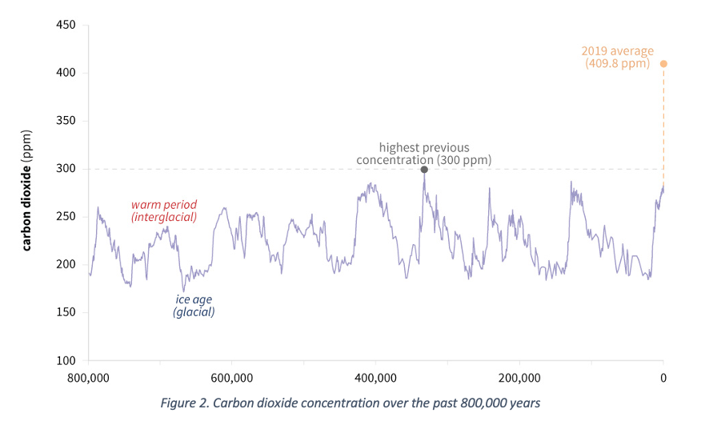
Most large, natural shifts in CO2 concentration have occurred over tens to hundreds of thousands of years or longer. For example, the periods between ice ages and warm periods occur over about 10,000 years (image left), with a total warming of up to 6°C in each cycle. Comparatively, state-of-the-art climate models predict that global mean temperatures will warm by 2–5°C in the next 100 years due to human CO2 emissions. This current rate of warming would be 20–60 times faster than the natural warming rate after ice ages. Today's shifts in CO2 concentration and global mean temperature due to human emissions are occurring too fast for plants and animals to be able to adapt.
You should keep in mind that when we say the global mean temperatures will rise by, say 5°C, it does not mean that at every point on Earth the temperature will rise by that amount. Remember that climate science is the study of average conditions over long periods of time. Weather, on the other hand, is the study of conditions at specific points on the globe for short periods of time. The youtube animation below shows the transfer of energy by convection in the Earth's troposphere over the period of Aug 1 – Sep 12, 2016. The brown masses are dry air and the blue masses are humid air.
This fascinating video shows the complex movement of air masses across the globe. You can see moist air across the equator, the monsoon in southeast Asia, the drought conditions in the western US, and if you look hard enough, you can see the small monsoon in Arizona.
Plants and animals do adapt to changes over geological time. This adaptation is called evolution. Animal evolution takes place over thousands of generations. The warming by 2–5°C over a span of only 100 years is way too abrupt for evolution to take its course. In the Earth's geological history, there have been several events that caused abrupt climate changes such as huge volcano eruptions and asteroid impacts. The fossil record shows that these catastrophic events actually wiped out 80–90% of all animal life. In these extreme cases there was no time to "adapt".
In 2012, then CEO of Exxon Mobil Rex Tillerson stated that "Changes to weather patterns that move crop production areas around — we'll adapt to that. It's an engineering problem and it has engineering solutions." So what are the conditions that humans must adapt to?
First let's take a more detailed look at projected surface temperatures for just North America.
The video on the left shows two temperature scenarios for North America at 30-year averages between 2000 and 2100. The first scenario assumes CO2 atmospheric concentrations have been held to 550 ppm. The second scenario assumes CO2 levels have been allowed to reach 800 ppm by 2100. At the current level of emissions, without any mitigation, we would easily reach 800 ppm by 2100.
Notice that most of the US is projected to experience about 8°F temperature increase while the states that are within a couple of hundred miles of ocean experience less of a temperature increase.
The extreme north of our continent is projected to increase about 10–12°F. While those northern areas will not be completely free of ice, much of it will be melted.
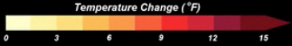
Magnified legend for easier reading. Temperatures are in °F rather than °C.
We can view satellite images of the change in minimum sea ice coverage from 1978 to 2020. The image on the left shows the minimum sea ice area over that period of time. This visual projection is a compilation of satellite images taken at the same time of year (September). From the superimposed graph, the minimum sea ice area has gone from 6.8M km2 down to about 3.4M km2, a reduction of about 50% in only 42 years.
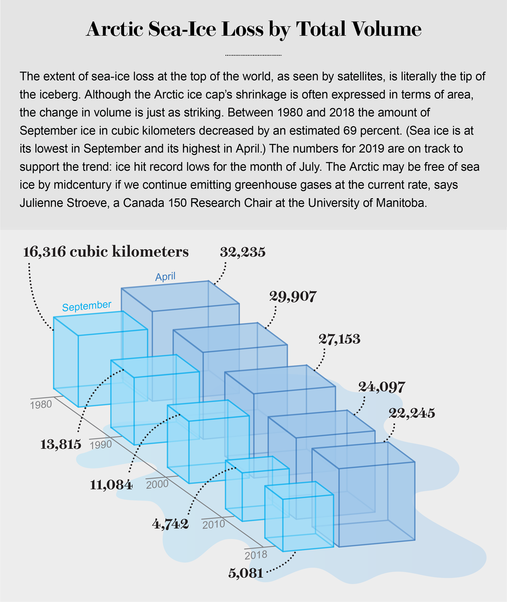
Measuring sea ice loss by area does not reveal the total extent of the loss. So when we measure the loss by volume, a more accurate picture emerges. A rough calculation gives us some insight into where we are headed. The total global CO2 emission rate is about 40 Gt (that is 40 billion metric tons) per year. At that rate, in only 25 years we will have added another 1,000 Gt to the atmosphere. That is a magic number since it has been estimated that an additional 1,000 Gt will make the Arctic free of ice throughout September.
NOTE: Since there is no land mass in the Arctic, all of the ice is already floating in the Arctic ocean. If that floating ice completely melts, it will not contribute to a rise in ocean level. You can verify this by doing a home experiment yourself. Take a tall glass and fill it half with water. Then add some ice cubes but not enough so that there is any ice that touches the bottom of the glass, that is, all the ice should be floating. Draw a line where the water level is at. Let the ice completely melt. You will notice that the water level has not changed.
This little experiment shows that only ice that is sitting out of water — ice that sits on top of a land mass ("glaciers" and "ice caps") — contributes to ocean volume increase. During the last glacial period about 20,000 years ago the global sea level was over 400 feet lower than it is today. It is estimated that if all the glacial and ice cap ice were to melt, the global sea level would rise by 230 feet. A loss of the Greenland ice sheet would add enough volume of water to the ocean to cause a rise of 23 feet.
The global mean sea level has risen by about 7–8 inches since 1900. Since 1993 the level has risen 3 inches, which is a rate of rise that is greater than during any preceding century in at least 2,800 years. As sea levels have risen, the number of tidal floods each year have increased 5–10 fold since the 1960's.
The video on the left shows two precipitation scenarios for North America at 30-year averages between 2000 and 2100. The two scenarios use the same assumptions as the temperature model: CO2 levels at 550 ppm and 800 ppm.
The most notable change is the US Southwest and South where those states will experience a precipitation reduction of about 5–10%.
Each color represents a 5% change. Positive (shades of green): 0%, 5%, 10%, 15%, 20%, 25%. Same increments on the negative (brown) side.
As we can see from the precipitation projection, more precipitation is projected in the northern US and less for the Southwest. There is not enough evidence that climate warming will generate more storms, but there is enough evidence that there will be increased heavy precipitation events. Since storms are just a manifestation of the release of energy, we should expect that release to become more intense. For each degree C of warming, the air's capacity for water vapor goes up by about 7%. An atmosphere with more moisture can produce more intense precipitation events. So an atmosphere that is around 4°C warmer is able to hold about 28% more water vapor.
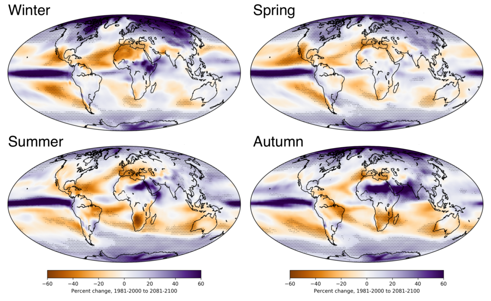
The graph on the left shows the projected changes in precipitation broken down by season for a CO2 level of 800 ppm. The changes are calculated as the difference between the averages from 1981–2000 and the averages from 2081–2100.
As you can see from the graphs, the regions there are swings of −60% to +60% in the amount of precipitation expected to fall. That is why we can expect precipitation events to be more extreme, for both dry and wet regions.
So given the temperature and precipitation changes, what is the impact on economies of the world?
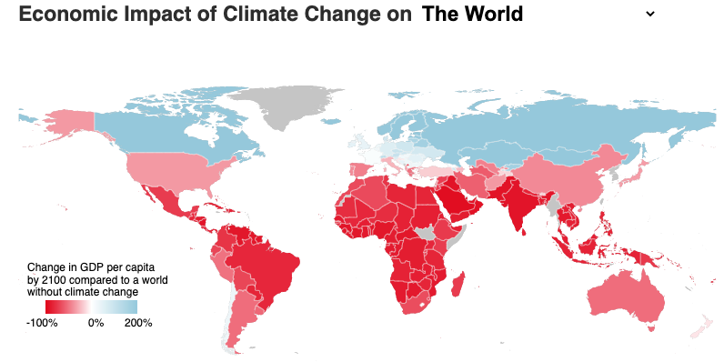
The above image comes from an online version of a paper published in Nature in 2015. You can use the link in the last sentence to go to a summary of the paper where you can find the interactive version of the image map. You can also use this link to see the original paper where the calculations are done.
In that interactive version, if you click on the US map, you will see that the calculations show a 71% likelihood that the US GDP per capita will be reduced by more than 20% within about 80 years.
Just a quick glance at the image shows that the economies of Canada, UK, Northern Europe, Scandinavia, and Russia expect to benefit locally from the predicted climate change whereas the two top economic powers, US and China will suffer. Also Mexico, Central America, central and northern South America, most of Africa, India, the Arabian peninsula, and Southeast Asia will be devastated economically.
But What About … The Senator's Statement?
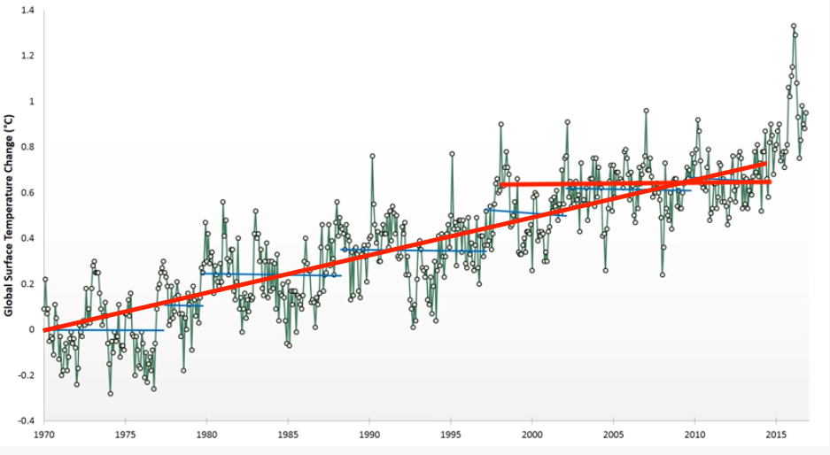
I once created a course called "How to Lie With Statistics". Decades later, a famous senator from Texas took a chapter right out of my course. In that chapter, I showed among other things how to "cherry pick" data from a larger set in order to "prove a point". The art of cherry picking is simple: out of a set of data, choose a subset that proves your point, regardless of what the data set as a whole shows.
On March 24, 2015 the senator made a famous statement about climate change: "satellite data demonstrate that there has been no significant warming whatsoever for 17 years". His statement was based on satellite data collected from 1970 to the present time, which was 2015. The image to the left shows the entire data set. In addition, the image shows the "cherry picked" data that the senator used to prove his point. The horizontal red line shows the "cherry pick". Indeed, if you start your line at an obvious temperature peak (1997) and then end it in the middle of temperatures taken in 2015, you can indeed make the conclusion that there was no significant warming during those years. In fact, the blue lines represent other "cherry picking" opportunities. But what does your eye tell you about the temperatures recorded between the whole of the data set, that is between 1970 and 2015? The longer red line shows the statistical best linear fit to all of the data. The true trend should be clear.
In addition to the "cherry pick", there is the obvious question: Why, after all the data previous to 1998 show an increase in temperature, would the warming effect just stop? What global conditions did the senator find that would explain such an abrupt termination of the increasing trend?
I would give the senator a mark of "10/10" for nicely executing the cherry pick move. He chooses his starting point at a temperature peak (1997 was an El Niño), and he conveniently ignores the data before 1997. On top of that, the data since 2015 shows a steady increase in temperature. But how can we fault the senator for not being able to look into the future when he cannot even look into the past.
Contrary Statements
The material presented in this article is agreed upon by over 97% of the Climate Science community. Most of the dissension is about the magnitude of the temperature changes that the climate models predict. Some say temperatures will be much higher, others say lower. But virtually none say that there is no climate change caused by human activity.
Most dissension comes from media sources that quote politicians. Below are some of those dissenting views expressed by elected officials. When you read these quotes, look carefully for proof of the statements that are made.
Tony Abbott
"Whether carbon dioxide is quite the environmental villain that some people make it out to be is not yet proven"
"I want to reduce emissions [...] but I think we've also got to accept that carbon dioxide is an essential trace gas as well."
"If man-made CO2 was quite the villain that many of these people say it is, why hasn't there just been a steady increase starting in 1750, and moving in a linear way up the graph?"
"The fact that we have had if anything cooling global temperatures over the last decade, notwithstanding continued dramatic increases of carbon dioxide emissions, suggests the role of CO2 is not nearly as clear as the climate catastrophists suggest."
"We can't conclusively say whether man-made carbon dioxide emissions are contributing to climate change."
Michele Bachmann
"the science indicates that human activity is not the cause of all this global warming. And that in fact, nature is the cause, with solar flares, etc."
"Carbon dioxide is natural. It occurs in Earth. It is a part of the regular lifecycle of Earth. In fact, life on planet Earth can't even exist without carbon dioxide."
"Carbon dioxide is portrayed as harmful, but there isn't even one study that can be produced that shows that carbon dioxide is a harmful gas... It is a harmless gas"
James Inhofe
"the cost to the American taxpayers [of climate legislation] would be between 3 and 4 hundred billion dollars a year"
"For the last several minutes I have been talking about natural climate variability over the past 1,000 years."
"The claim that global warming is caused by man-made emissions is simply untrue and not based on sound science."
"CO2 does not cause catastrophic disasters — actually it would be beneficial to our environment and our economy"
Dennis Jensen
"I do not accept the premise of anthropogenic climate change, I do not accept that we are causing significant global warming and I reject the findings of the IPCC and its local scientific affiliates."
"So what we have is a more and more desperate anthropogenic global warming theory supporters club who, when the data indicates that the planet has not been heating for the last 10 years and the oceans have not heated for at least the last five, tell us that global warming is happening even more quickly than the theory predicts."
Editor's note: I give him 5/10 for cherry picking.
Nigel Lawson
"[we should not] persuade the world to impoverish itself by moving from relatively cheap carbon-based energy to much more expensive non-carbon energy."
"if there is a resumption of warming, the only rational course is to adapt to it, rather than to try (happily a lost cause) to persuade the world to impoverish itself"
"so far this century both the UK Met Office and the World Meteorological Office confirm that there has been no further global warming at all"
"While CO2 is indeed a greenhouse gas, increasing concentrations of which may be expected to have (other things being equal) a warming effect, scientists disagree about how large that effect may be."
"Whether it [CO2] is a major or minor contribution to [global] warming is extremely uncertain, the scientists don't really know."
Sarah Palin
"But while we recognize the occurrence of these natural, cyclical environmental trends, we can't say with assurance that man's activities cause weather changes."
"any potential benefits of proposed emissions reduction policies are far outweighed by their economic costs."
"I'm not one to attribute every activity of man to the changes in the climate."
"A changing environment will affect Alaska more than any other state. I'm not one though who would attribute it to being man-made."
Ron Paul
"the greatest hoax I think that has been around for many, many years if not hundreds of years has been this hoax on the environment and global warming"
"there is no consensus in the scientific community that global warming is getting worse or that it is manmade"
Tim Pawlenty
"There's lots of layers to it. But at least as to any potential man-made contribution to it, it's fair to say the science is in dispute."
"The weight of the evidence is that most of it, maybe all of it, is because of natural causes."
Rick Perry
"No, most likely the primary control knob [for climate] is the ocean waters and this environment that we live in [not CO2]."
"there are a substantial number of scientists who have manipulated data so that they will have dollars rolling into their projects"
Marco Rubio
"First of all, the climate is always changing. That's not the fundamental question, the fundamental question is whether man-made activity is what's contributing most to it. I understand that people say there is a significant scientific consensus on that issue, but I've actually seen reasonable debate on that principle."
Ted Cruz
"The satellite data demonstrate that there has been no significant warming whatsoever for 17 years. Now that's a real problem for the global warming alarmists because all of the computer models on which this whole issue is based predicted significant warming, and yet the satellite data show it ain't happening."
Ron Johnson
"I absolutely do not believe that the science of man-caused climate change is proven. Not by any stretch of the imagination. I think it's far more likely that it's just sunspot activity, or something just in the geologic eons of time where we have changes in the climate."
Pat Toomey
"There is much debate in the scientific community as to the precise sources of global warming."
Rand Paul
"[climate change] may or may not be true, but they're making up their facts to fit their conclusions."
"While I do think man may have a role in our climate, I think nature also has a role. The planet's 4.5 billion years old."
Roy Blunt
"There isn't any real science to say we are altering the climate path of the earth."
Richard Shelby
"Important scientific research is ongoing, and there are still many questions that must be answered before we take steps to address this issue"
"is the climate change phenomenon cyclical or is it a function of man-made pollutants, or both?"
Mo Brooks
"What about erosion? Every time you have that soil or rock, whatever it is, that is deposited into the seas, that forces the sea levels to rise because now you've got less space in those oceans because the bottom is moving up"
Editor's note: LOL!
Gary Palmer
"I am a firm believer in sound science, there have been new findings that clearly show the science is not settled on climate change."
Dan Sullivan
"despite what many climate change alarmists want us to believe, there is no general consensus on pinpointing the sole cause of global temperature trends."
Don Young
"I think this is the biggest scam since the Teapot Dome"
"I do not challenge that climate change is occurring, but the central question awaiting an answer is to what extent man-made emissions are responsible for this change."
Andy Biggs
"I do not believe climate change is occurring."
"I do not think that humans have a significant impact on climate."
Debbie Lesko
"Is some of it, maybe, human-caused? Possibly. But certainly not the majority of it. I think it just goes through cycles and it has to do a lot with the sun. So no, I'm not a global warming proponent."
David Schweikert
"I don't see the data. When you think about the complexity of a worldwide system, and the amount of data you'd have to capture — how do you adjust for a sunspot? How do you adjust for a hurricane, and this and that?"
Editor's note: I have been working for years on a theory that adjusts for this and that. I have the this, but still haven't found a solution for that.
Tom Cotton
"The simple fact is that for the last 16 years the earth's temperature has not warmed"
Bruce Westerman
"I assume if climate's changing, it's changing in Arkansas, as well as other places... So I did a little research and found out the number of forest fires in Arkansas has actually decreased over the past 20 years... So apparently the climate change isn't affecting forest fires in my state."
Duncan Hunter
"There is climate change. Is there human-caused climate change? I don't buy that."
Doug LaMalfa
"I think there's a lot of bad science behind what people are calling global warming"
Cory Gardner
"I believe the climate is changing, but I disagree to the extent that's been in the news that man is changing"
Ken Buck
"Sen. Inhofe was the first person to stand up and say this global warming is the greatest hoax that has been perpetrated. The evidence just keeps supporting his view."
Mitch McConnell
"For everybody who thinks it's warming, I can find somebody who thinks it isn't."
James Comer
"I do not believe in global warming. I'm the one person whose business and livelihood depends on Mother Nature, so I understand weather patterns. We've had a very severe winter this year with 12-inch snows, so there is no global warming."
Bill Cassidy
"Global temperatures have not risen in 15 years"
Bill Huizenga
"Today's global warming doomsayers simply lack the scientific evidence to support their claims... A host of leaders in the scientific community have recognized that the argument for drastic anthropogenic global warming is no longer based on science, but is being driven by irrational fanaticism."
Tim Walberg
"I believe there's been climate change since the beginning of time. Do I think man has some impact? Yeah, of course. Can man change the entire universe? No. Why do I believe that? Well, as a Christian, I believe that there is a creator in God who is much bigger than us. And I'm confident that, if there's a real problem, he can take care of it."
Collin Peterson
"We've just had the biggest floods and coldest winters we've ever had. They're saying to us [that climate change is] going to be a big problem because it's going to be warmer than it usually is; my farmers are going to say that's a good thing since they'll be able to grow more corn."
Marsha Blackburn
"Of course you can be a believer in clean air and clean water and realize that when you work at global warming or climate change, as it is now popularly called, that it is cyclical and you have to look at it in terms of centuries, not in terms of decades. And the science around that is not a settled science"
John Barrasso
"The climate is constantly changing. The role human activity plays is not known"
Mike Enzi
"I barely made it back here because of a May snowstorm in Wyoming. They got 18 inches in Cheyenne. It's a little hard to convince Wyoming people there's global warming. We have 186% of normal snow pack. That's global warming?"
Liz Cheney
"[The federal government's] assertions about climate change are based on junk science"
Opinion
Our country has a recent history of denial of scientific evidence:
- Depletion of the Ozone Layer
The ozone layer blocks most of the harmful ultraviolet light. - Lead
Lead was found to be harmful to our health. It was found in our drinking water, in the air, in our water pipes, and in paint. - Tobacco Use
Tobacco use was found to be a main factor in the cause of cancer and heart disease. - Acid Rain
When sulfur dioxide and nitrogen oxides are released from burning fossil fuels, they combine with water and oxygen in the atmosphere to form acidic pollutants. - Anti-Vax
Vaccines had wiped out polio, smallpox, measles, diphtheria, pertussis, tetanus, rubella, hib, pneumococcal disease, rotavirus, mumps, chicken pox until the anti-vax lobby began spreading misinformation about the dangers of vaccines. - Climate Change
Read this article. - COVID-19
The refusal that we have a problem has led us to this point: 4,000 deaths per day and the lack of a dependable vaccine distribution system.
All of these examples (except for the anti-vax) of scientific evidence denial have one thing in common. The motivations behind all the denials were all about money. The campaigns against each instance all made the argument that the solution to the stated problem would cost too much. Ozone depletion was denied by the companies that used chlorofluorocarbon gases to propel aerosol products. Lead poisoning data was denied by the plumbing industry (interesting that the Latin word for lead is plumbum), and the oil and gas industry. Health risk data from using tobacco was, of course, denied by the tobacco industry. Acid rain data was denied by the oil and gas industry. Climate change data is still being denied by politicians that are concerned that the solution will cost too much.
The notion that solutions to problems that scientific data uncovers are expensive is a valid point. There should be an open discussion of whether we should spend the money on these issues. And that is what actually happened in the cases of ozone depletion, lead poisoning, tobacco use, and acid rain. The people responsible for the allocation of funds did sit down, looked at the evidence and decided that the cost and loss of jobs was worth getting rid of these health risks. The same process needs to take place with the case of climate change.
Yes, the climate change models need to become more accurate. The models need to include useful information for local planning with timeline accuracy. As climatologist Tapio Schneider put it, "Models cannot tell New York City how high to build sea walls, or California how much to spend to protect its vast water infrastructure." The timelines in existing models have too wide a range, often the time of a human generation. Local governments need to know the "when" and the "where" with assigned probabilities.
So instead of denying that the problem exists, politicians should be demanding from climate scientists better models that use Machine Learning to train those models using past data to more accurately predict future conditions. It is only by the use of these kinds of models that local governments can get a grasp on the extent of the problems they are likely to face.
Once governments get a clearer picture of the challenges, then they can make the hard decision. We seem to have two choices when faced with the problem of climate change: (1) Leave things the way they are and kick the problem down the road to our children and grandchildren to solve, or (2) Invest in solutions now before we get to the headaches that are projected for 2100.
If we decide to allow emissions to continue at their current rate of increase, then let that decision be out in the open. "Yes, we know the risks, but we are going to take our chances because that is our policy."
If we decide to invest in solutions to the problem, then make a plan so that everyone can see a timeline and costs of such a venture.